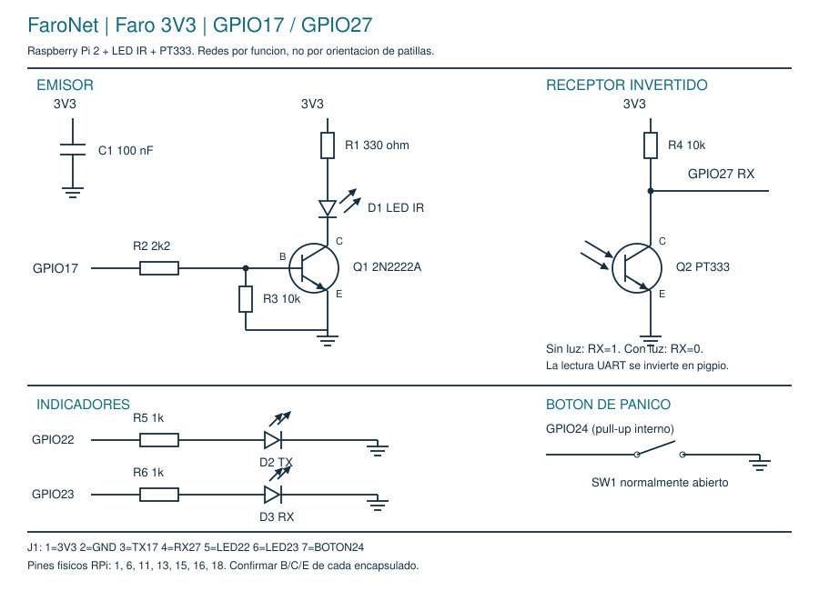

Esquema actual de cada Raspberry Pi 2. El PT333 entrega 0 con luz y 1 sin luz.
El programa utiliza --uart pigpio e invierte la recepción.

Conexiones y patillaje · Materiales y costos · Pruebas de multímetro
Esta revisión sustituye el circuito anterior GPIO14/15 con receptor de otra polaridad. No conectar 5 V a los GPIO. Confirmar las patas B/C/E del transistor con la referencia de su fabricante.